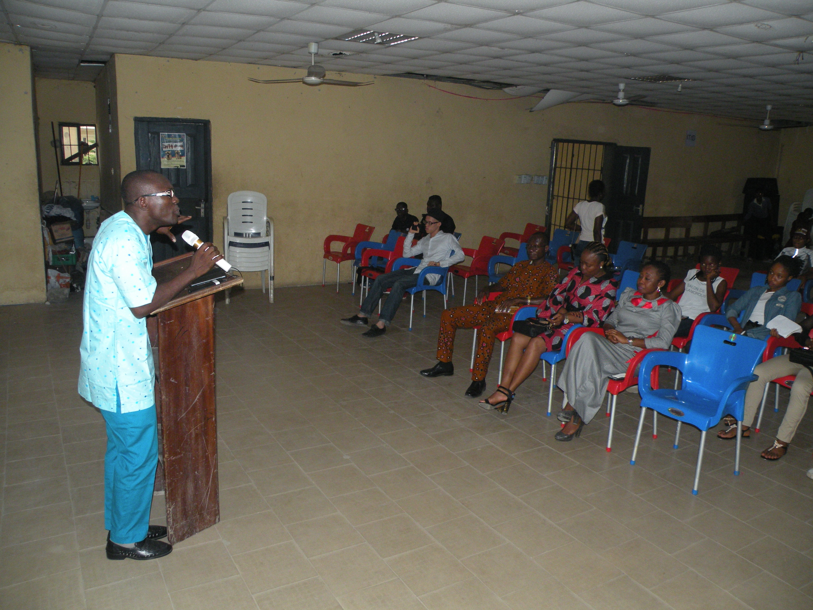

Call: 07034436749, 08183996269
Mail: paulagu53@gmail.com
Facebook: facebook.com/paul.agu
Whatsapp: 07034436749
SOPHIA CHRISTIAN CENTRE (Royal Chapel), Lagos
Come 'n experience a taste of refreshing showers
@ SCC Ikorodu
1-10 SCC close,
Ikorodu, Lagos, Nigeria.
Sundays
Divine Visitation
8:00 a.m,
Wednesdays
Healing Xplosion
4:30 a.m,
SCC...Knowing Christ; and making him known.
3 days Ago
FRANK TALK ™
Franktalk is a talkshow, an oufit of Paul Agu Ministries.
5 days Ago